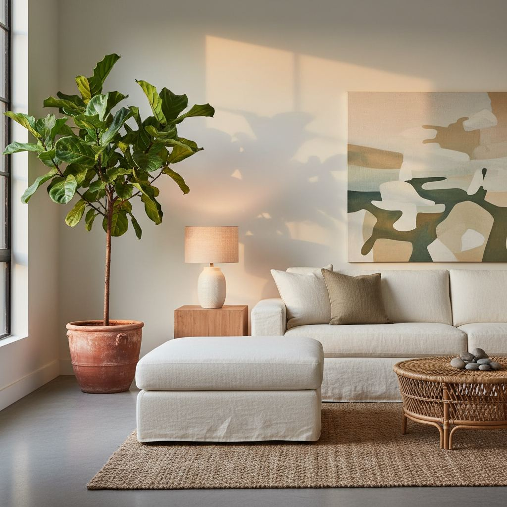

Sustainable Home Decor Basics: What Actually Matters

The most sustainable decor decision is almost always to buy fewer, longer-lasting pieces. Everything else is a rounding error next to that.
Buy less, buy longer
A well-made sofa that lasts 15 years has roughly a third of the lifetime footprint of three replacement sofas. Pay for build quality up front and repair when possible.
Materials that age well
Solid hardwood, natural stone, wool, linen, and full-grain leather all improve visually with age. Veneered particleboard, polyester upholstery, and printed vinyl deteriorate visibly within a few years.
Second-hand first
For frames, cabinets, and case goods, the second-hand market is enormous and undervalued. Reupholster a solid vintage sofa before buying a new one.

Reclaiming & Upcycling Materials
Before you buy anything new, consider the forgotten treasures tucked away in your attic, garage, or even a local salvage yard. Reclaiming and upcycling materials is one of the most impactful ways to reduce your decor footprint. It’s not just about painting an old dresser; it's about seeing the inherent potential in existing resources. I recently transformed a set of discarded mid-century modern filing cabinets, originally destined for a landfill from a defunct law office, into a stylish living room console. After a thorough cleaning and sanding (120-grit followed by 220-grit for a smooth finish), I applied a low-VOC, water-based enamel paint in a deep, sophisticated indigo blue. I then swapped out the original industrial-style silver pulls for sleek brass bar pulls (sourced from Etsy for $8-$12 each, depending on length). Total cost for the upgrade was under $100, and it saved bulky steel from being wasted.
Look for solid wood pieces that might have cosmetic damage but are structurally sound. Scratches and dings are part of their story, easily concealed or celebrated with a good sanding and a fresh coat of paint or stain. Old doors can become unique tabletops with the addition of sturdy legs, and wooden crates can be stacked and secured to create modular shelving.
Investing in Repairable Design
True long-term sustainability comes from purchasing items that are designed to be repaired, not replaced. Think about furniture with removable cushion covers, easily accessible hardware, and standard component sizes. A common mistake I see is buying sofas with permanently attached upholstery. When a spill or wear-and-tear inevitably happens, the entire piece is compromised. Instead, seek out sofas with zip-off covers (ideally machine washable) and modular frames where individual sections can be replaced. For example, a quality sectional with independent seat cushions wrapped in Sunbrella fabric might cost 20-30% more upfront than a budget alternative but offers decades of potential use with simple fabric swaps or cushion re-stuffing. Avoid pieces with proprietary fasteners or integrated, non-standard electronics that are impossible to fix without specialized tools or parts. Always ask about material composition and construction methods. If a piece uses multiple disparate materials fused together permanently, its end-of-life recycling potential is significantly diminished. Prioritize solid wood joinery over particle board with cam locks, and choose natural fibers over synthetic blends where possible for easier re-upholstery.
The Power of Plants & Natural Elements
Incorporating living plants and other natural elements is a cornerstone of sustainable decor, offering both aesthetic and environmental benefits. Beyond their air-purifying qualities, plants bring a sense of tranquility and connection to nature that synthetic decor simply cannot replicate. Opt for locally sourced plants where possible to reduce transport emissions. For example, a large Fiddle Leaf Fig (Ficus lyrata) or a Snake Plant (Sansevieria trifasciata) in a terracotta pot can transform a room. I always recommend placing larger plants in pots with a drainage hole and a saucer to prevent root rot and protect your flooring. Aim for at least one medium-to-large plant (over 18 inches tall) per approximately 100 square feet of living space to make a noticeable impact.
- Consider materials like untreated wood branches or logs for sculptural accents.
- Display found pebbles, interesting stones, or seashells from your travels.
- Use woven baskets made from natural fibers like jute, rattan, or seagrass for storage.
- Incorporate linen or organic cotton textiles for throws and cushions.
These elements are inherently sustainable, often biodegradable, and add an organic texture and warmth that manufactured items struggle to replicate. A large woven jute rug (e.g., 8x10 feet) under a dining table, for instance, adds warmth, defines the space, and is made from a rapidly renewable resource.
Mindful Lighting Solutions
Lighting plays a crucial role in ambiance and sustainability. It's not just about the fixture; it's about the bulb, its energy consumption, and the materials of the overall design. When choosing fixtures, prioritize designs crafted from natural or recycled materials. Think lamps with bases made from reclaimed wood, ceramic, or hand-blown recycled glass. A common mistake is overlooking the environmental impact of cheap plastic light fixtures that quickly yellow and become brittle. Instead, invest in a timeless brass desk lamp or a ceramic table lamp that will last for decades.
For bulbs, the undisputed champion of sustainable lighting is the LED. While initially more expensive, an LED bulb consumes up to 80% less energy than a traditional incandescent bulb and can last 25 times longer. For example, replacing five 60-watt incandescent bulbs with five 9-watt LED bulbs can save roughly $60 annually on electricity costs, depending on your energy rates. Always look for LEDs with a Color Rendering Index (CRI) of 90 or higher for accurate color representation, and choose a color temperature (Kelvin) appropriate for the room's function: 2700K-3000K for warm, inviting living spaces; 3500K-4000K for brighter task lighting in kitchens or offices. Incorporating dimmer switches also allows for energy reduction and mood adjustment, further enhancing sustainability and usability.
Ethically Sourced Textiles
Our commitment to sustainable decor extends to the fabrics we choose for curtains, upholstery, throws, and bedding. The textile industry can have a significant environmental and social impact, from water consumption to labor practices. Prioritize ethically sourced textiles made from sustainable fibers. Look for certifications like GOTS (Global Organic Textile Standard) for organic cotton, OEKO-TEX for textiles free from harmful substances, or Fair Trade certification for equitable labor practices. Avoid conventional cotton where possible, as it's one of the most pesticide-intensive crops globally.
- Linen: Made from flax, linen is durable, breathable, and requires less water and pesticides than cotton. It also softens beautifully with age. A luxurious linen throw (e.g., 50x70 inches) can range from $80-$200 but will last years.
- Hemp: Similar to linen, hemp is a fast-growing fiber that needs minimal processing and little water. Its texture is often slightly coarser but incredibly strong.
- Organic Cotton: If choosing cotton, ensure it's certified organic to avoid chemical use in farming.
- Recycled Materials: Fabrics made from recycled PET bottles (polyester) or reclaimed wool offer a second life to existing materials, reducing waste and demand for virgin resources.
When purchasing, ask about the origin and production methods. A well-made wool rug from a cooperative in Morocco, while an investment (e.g., $500-$2000 for an 8x10), supports artisans directly and offers unparalleled durability and natural insulation, lasting easily 50 years with proper care.
Key takeaways
- Fewer, better pieces beats any label.
- Choose materials that age well.
- Shop second-hand first for frames and case goods.
Frequently asked questions
Are bamboo products always sustainable?
Not always. Fast-growing bamboo is a good raw material, but many bamboo textiles use chemical-heavy processing that undoes the benefit.

Sophia Bennett is a certified interior stylist and the senior editor at Styleire. She has spent more than eight years helping homeowners and renters create warm, functional interiors, with hands-on experience across small city apartments and family homes. Her work has been informed by close collaboration with independent designers, craftspeople, and product testers.
View full profile →Related reading

How to Choose a Sofa: The Complete Buyer's Guide
A good sofa lasts fifteen years. Here is how to make sure the one you buy is one of them.

How to Build a Warm Neutral Color Palette for Your Home
Warm neutrals are the safest and most flattering base for a whole-home palette. Here is how to build one on purpose.